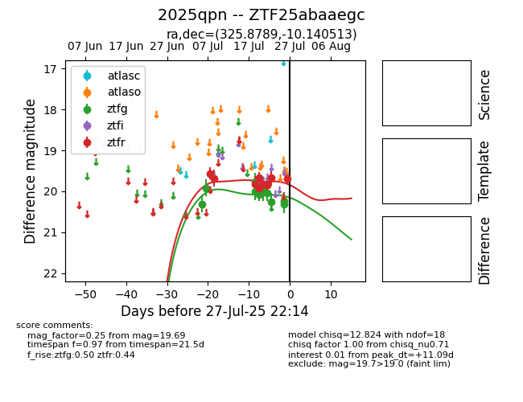

Target 2025qpn at 2025-07-27 22:14, see:
FINK: fink-portal.org/2025qpn
Lasair: lasair-ztf.lsst.ac.uk/objects/2025qpn
ALeRCE: alerce.online/object/2025qpn
TNS: wis-tns.org/object/2025qpn
YSE: ziggy.ucolick.org/yse/transient_detail/2025qpn
alt names
ZTF25abaaegc (ztf,fink)
2025qpn (tns,yse)
coordinates:
equatorial (ra, dec) = (325.8789,-10.14051)
galactic (l, b) = (44.6698,-42.68661)
photometry
last ztfg=20.23, ztfr=19.69
13 ztfg, 10 ztfr detections
